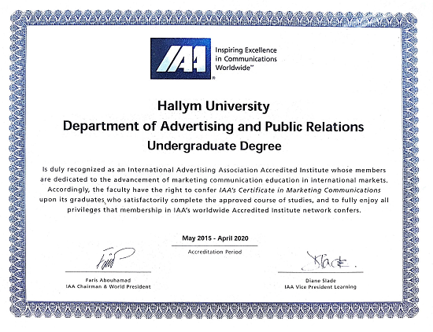

한림대학교 광고홍보학과 공식 홈페이지

최우수 프로그램 및 전공교육 선진화 모델
국내 대학에서 오직 하나뿐인 국제 공인 광고인자격을 취득할 수 있는 광고홍보 교육 프로그램.
IAA 인증은 현재 미시간주립대학교, 플로리다대학교 등 광고홍보 분야의 주요 대학을 포함하여
전 세계 57개 기관에게만 부여된 것으로,
한림대 광고홍보학과가 IAA인증을 획득했다는 것은
이른바 국제적 기준에 부합되는 교육 프로그램임을 인정받았다는 것을 의미한다.